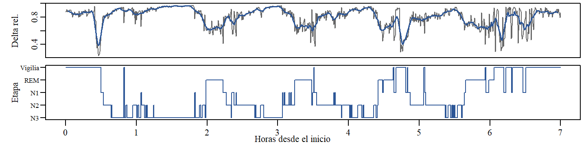

Pronóstico de la dinámica del sueño con series de tiempo EEG (Sleep-EDF)
19 de octubre de 2026
Propuesta del curso Series Temporales — Maestría en Ciencia de Datos. Facultad de Ingeniería y Ciencias, Pontificia Universidad Javeriana Cali.
1. INFORMACIÓN A TRABAJAR. Registros polisomnográficos de la base pública Sleep-EDF Database Expanded (PhysioNet): 197 noches completas con EEG (Fpz-Cz y Pz-Oz, 100 Hz), EOG y EMG, con hipnograma marcado por técnicos expertos en épocas de 30 s. Se usará el estudio Sleep Cassette (153 registros de adultos sanos de 25 a 101 años). Cada noche se convierte en una serie de tiempo: la potencia relativa de la banda delta (0.5–4 Hz) del EEG Fpz-Cz por época de 30 s; p. ej., el sujeto SC4001 aporta 841 observaciones (7 h).

Figura 1: Sujeto SC4001: potencia delta relativa por época de 30 s (arriba) e hipnograma (abajo).
2. JUSTIFICACIÓN E IMPORTANCIA DEL PRONÓSTICO. La actividad delta refleja el sueño profundo (N3), clave para la memoria, la recuperación física y la salud metabólica. La serie tiene la estructura que estudia el curso: ciclos de sueño de 80–100 min que actúan como estacionalidad (la ACF repunta cerca del rezago 166, aprox. 83 min), tendencia decreciente durante la noche y fuerte autocorrelación entre épocas. Pronosticarla agrega valor en tres frentes: (i) diagnóstico más eficiente, pues un técnico clasifica a mano cerca de 1 000 épocas por noche y anticipar la dinámica del sueño apoya la clasificación automática; (ii) intervenciones en tiempo real, como la estimulación auditiva en lazo cerrado, que necesita predecir cuándo comenzará el sueño profundo para reforzarlo; y (iii) monitoreo en casa con EEG portátil, que requiere modelos ligeros (ETS, SARIMA) para pronosticar el estado de sueño y detectar noches anómalas.
3. FUENTES Y PERMISOS DE USO. No se usan datos de una empresa privada ni de pacientes propios; la base es pública y anonimizada. Sleep-EDF Database Expanded v1.0.0 — PhysioNet, doi:10.13026/C2X676, bajo licencia Open Data Commons Attribution v1.0 (ODC-By): acceso abierto y uso libre, incluso comercial, con la obligación de citar la fuente. En el repositorio solo se publican las series derivadas.
REFERENCIAS. Kemp, B., Zwinderman, A. H., Tuk, B., Kamphuisen, H. A. C. y Oberyé, J. J. L. (2000). Analysis of a sleep-dependent neuronal feedback loop: the slow-wave microcontinuity of the EEG. IEEE Trans. Biomed. Eng., 47(9), 1185–1194. Pollard, T. et al. (2026). PhysioNet as a global platform for biomedical research. Nature Health. doi:10.1038/s44360-026-00096-z.